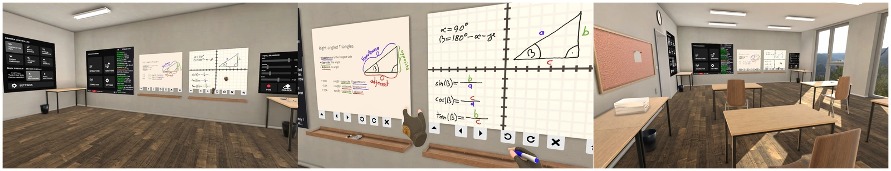
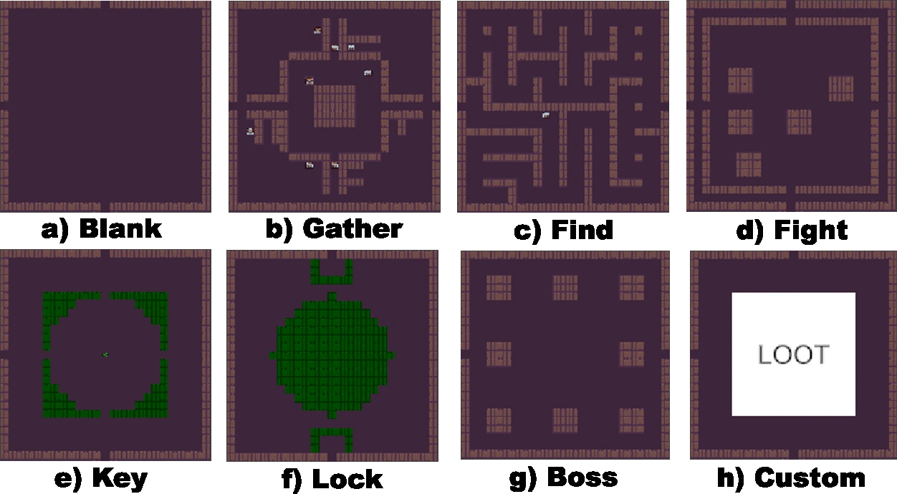
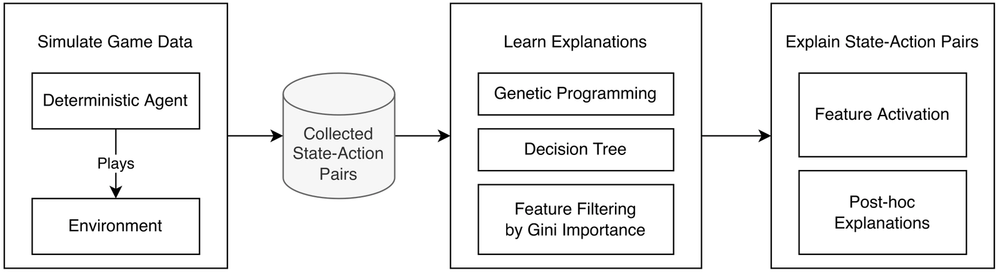
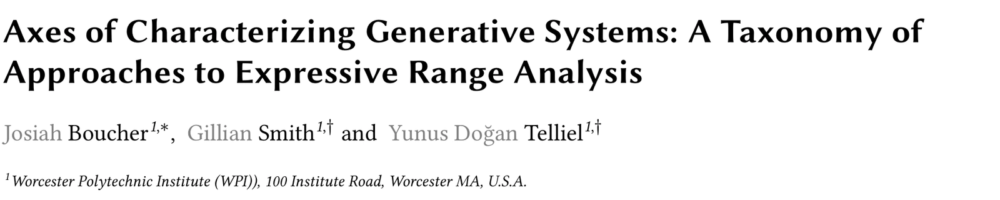
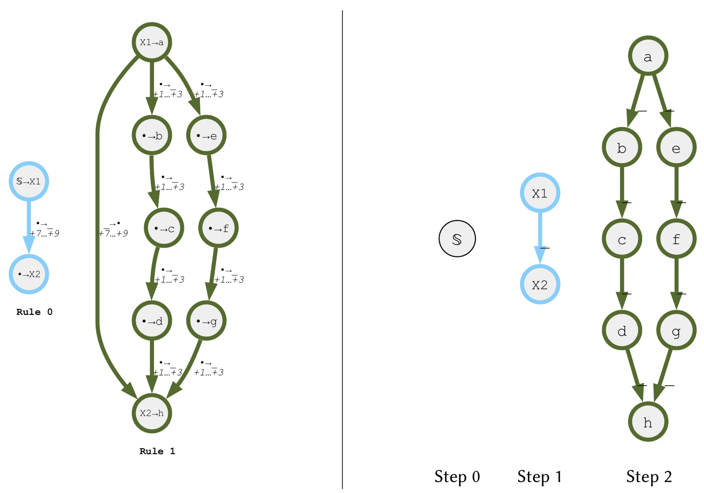

Dear Esther: An Interactive Ghost Story Built Using the Source EngineDear Esther：使用Source引擎构建的交互鬼故事
Dan Pinchbeck回顾2008年Source引擎模组Dear Esther的设计与社区反响：它通过荒岛环境、半随机旁白和音乐组织探索，减少常规冲突与目标。文章详细说明第一版“故事过多”、随机化过于抽象和触发音频交叠等问题，以及随后在瓶颈、路径、视觉引导和音乐结构上的调整。这是原始模组开发论文，与现有作品介绍卡分开保留。
The IRIS Network of Excellence: Integrating Research in Interactive StorytellingIRIS卓越网络：整合交互讲故事研究
IRIS把故事生成、叙事形式体系、场面呈现、作者工具和用户体验评价放到共同的研究议程中。这篇项目论文关心各项研究怎样互相接通：计算叙事学能够提供什么模型，创作者需要怎样的工具，评价又该如何回应具体受众及预期体验。项目通过合作网络组织这些研究方向及其相互联系。
Reflexion: Language Agents with Verbal Reinforcement LearningReflexion：基于语言强化学习的语言智能体
Reflexion把任务反馈写成下一次尝试可用的文字经验。文章区分行动生成、结果评估与自我反思三个模块，讨论怎样保存反馈、怎样发现测试本身的错误，并在家务任务、问答与程序生成中比较这种做法的效果。

ShakesVR: Redefining narrative strategies for linear storytelling in a fully immersive environmentShakesVR：在全沉浸环境中重新界定线性叙事策略
在虚拟现实里，观众可能正看着船的另一头，错过舱房里决定剧情的那一刻。汉内斯·拉尔用《ShakesVR》说明怎样保留故事线，又让观众自由观察。他给船上同一件事安排可见、可听的几种线索，在关键处用进入舱房触发情节，并以2019年里斯本27名体验者的试验说明实际效果。

VRTeaching: a tool for virtual reality remote lecturesVRTeaching：用于虚拟现实远程授课的工具
VRTeaching把白板、幻灯片、直播聊天与投票放进虚拟讲堂，让演讲者在VR中授课，观众通过普通设备观看。论文同时关心工具是否好用，以及教师和作报告的学生为这种环境付出怎样的注意与操作成本。10位专家试用后，研究进一步让7位教师、8位学生在VR、在线视频与现场环境中完成报告，发现VR的主观心理需求更高，而心率和心率变异性未出现显著环境差异。这使“更沉浸的教学”成为一个关于授课者、观众反馈与工具组织的具体设计问题。
VirtualActor: Endowing Virtual Characters with a Repertoire for ActingVirtualActor：赋予虚拟人物一套表演技艺
VirtualActor是一项以线性3D电影制作为重点的研究计划。Ido A. Iurgel提出，用Creactor框架连接采用不同人工智能技术的虚拟演员，让作者以不同抽象层次指挥表演，再迭代改进。文章把基于案例的推理视为形成演员个性与表演技艺储备的一种待测方法，并讨论其对其他交互人物创作工具的潜在意义。
Voyager: An Open-Ended Embodied Agent with Large Language ModelsVoyager：基于大语言模型的开放式具身智能体
Voyager通过自动课程提出探索目标，把成功运行的程序存入技能库，再用环境反馈、执行错误和任务验证改进后续程序。作者在Minecraft中考察这些环节如何帮助智能体积累、组合和迁移行动技能。

One Spell Fits All: A Generative AI Game as a Tool for Research in AI Creativity and Sustainable Design一咒皆解：作为人工智能创造力与可持续设计研究工具的生成式人工智能游戏
论文介绍一款女巫召唤游戏的原型：系统先给出答案关键词，再由本地大语言模型反向生成村民的不同问题；玩家用一次文字输入提出同时解决所有问题的物品。原型结合语言模型、相似度评估模型、扩散图像生成与Unity，以此探索人工智能原生游戏的机制设计。作者报告游戏创作马拉松中的初步反馈，并提出创造力、用户体验和本地／云端能耗比较的研究方法；系统性用户研究与能耗比较仍属于后续工作。
Interactive Narrative, Plot Types, and Interpersonal Relations交互叙事、情节类型与人际关系
一段故事允许人介入之后，情节是否还需要保持原来的形状？Marie-Laure Ryan从史诗型与戏剧型情节的区别切入，考察目标行动、人物关系、情绪和冲突怎样支持不同形式的参与。史诗型与戏剧型情节在文学史中持续混合，原型之间的比较使这些组合方式更加清楚。

Quest to Dungeon (QtD): Towards a Tool that Supports Collaboration between Narrative and Level Designers从任务到地牢：支持叙事与关卡设计师协作的工具
任务故事希望玩家寻找什么、经历什么，关卡空间却未必能及时把这些意图表达出来。本文提出Quest to Dungeon（QtD）：设计师在6×6网格里组合空白、采集、寻找、战斗、钥匙、锁、首领和自定义环节，系统再以不同模板生成相应房间，使任务关系与空间布局一一对应。八名具有游戏开发背景的参与者，分别完成双结局任务和自由设计任务；问卷与操作日志显示，工具有助于可视化设计意图，也支持先搭布局再填任务、或先有故事再组织空间的迭代方式。生成房间不能直接编辑，控制感评价也较低；研究只测试了单个用户，因此跨设计岗位的协作效果仍是参与者的预期和后续研究目标。

5000 Characters at Video Frame Rate using Declarative Programming以声明式编程让5000个角色按视频帧率运行
论文以州博览会模拟为实例，使用声明式逻辑编程实现基于需求的角色行动选择。作者结合原生C编译、按谓词并行求值和带时间戳的需求状态，在Apple M3 Pro上运行5000个角色，并报告帧时间及动作选择成本。其结果建立在每个地点提供一种行动、每个行动满足一种需求、粒子式角色渲染和简单直线移动等具体条件之上。正文及代码附录给出了评分、选择、移动接口、计时和需求更新的实现。

The Nintendo Artificial Neural Network System任天堂人工神经网络系统
本文报告将一个小型人工神经网络移植到任天堂娱乐系统（NES）的实验。作者先在现代台式计算机上训练数字图像分类器，再把预训练权重和6502汇编程序装入32 KB程序ROM范围，通过手柄绘图界面在实体NES上执行分类。文章讨论输入图像二值化与裁剪、400—16—10网络结构、浮点运算和卡带存储预算，并将用于游戏AI的强化学习模型列为后续工作。
Making the Familiar Unfamiliar: Techniques for Creating Poetic Gameplay使熟悉之物变得陌生：创造诗性玩法的技法
米切尔拿《Thirty Flights of Loving》做细读，问游戏怎样让玩家重新注意自己已经习惯的操作。他从几处突兀的剪切讲起，分析失去控制、时间跳跃和叙事边界的变化怎样被玩家直接感到。文章借什克洛夫斯基的陌生化解释这些技法，也为比较其他游戏的诗性效果提供了区分。

Towards Cognitive-Plausible Explanations for Board Game Agents with Genetic Programming借助遗传编程迈向符合认知合理性的棋盘游戏智能体解释
棋力强大的游戏智能体，未必能让人理解它为何在某处落子。这篇论文从知识如何表示入手，用遗传编程寻找描述棋盘单元及其空间关系的短程序，再用决策树把这些局部特征组织成通向行动的路径。读者因而可以看到：某次决策经过了哪些检查，哪些特征成立，哪些不成立。
Some Notes on the Nature of Game Design关于游戏设计本质的几点笔记
游戏设计著作经常说明游戏由哪些要素构成，却较少拆解设计者实际上怎样工作。这篇论文以设计情境为线索，将六本游戏设计著作与Löwgren、Stolterman及Lawson的设计研究模型对读，讨论表述、表征、行动、评估和反思如何贯穿开发过程。作者主张，把游戏设计理解为持续变化、由多人及具体条件共同塑造的活动，有助于改进设计研究与方法。
Print Is Flat, Code Is Deep: The Importance of Media-Specific Analysis印刷是平面的，代码是深层的：媒介特异性分析的重要性
海勒以电子诗、超文本和艺术家书籍为例，提出文本分析必须处理作品赖以呈现的材料与技术。文字的空间安排、代码和读者的操作，都参与意义的生成。
Revisiting Character-Based Affective Storytelling under a Narrative BDI Framework在叙事BDI框架下重新审视基于人物的情感故事讲述
本文把BDI的信念、欲望与意图引入基于人物的情感故事讲述，用《奥赛罗》《哈姆雷特》及《包法利夫人》的模型讨论认知解释与叙事功能如何衔接。作者区分由规划器控制的解释算子、人物交互与身体行动，分析理性计划和情感反应的不同作用，并明确承认三个例子均未探索超过一名“完整BDI”智能体的故事。
Animation-Based Interactive Storytelling System基于动画的交互讲故事系统
WordsAnime让儿童与新手通过分段写作、选择候选情境和编写IF/THEN规则组织动画故事。Kaoru Sumi介绍它如何连接故事情境与Animebase中的GIF动画，并比较手动、半自动和全自动三种创作方式。文章也直接面对素材部件的限制：系统找到的动画未必恰好实现写作者想象的动作与场景。
Locating Drama: A Demonstration of Location-Aware Audio Drama定位戏剧：位置感知音频戏剧演示
这篇演示论文介绍Lansdown电子艺术中心与BBC合作的Locating Drama项目。它以GPS感知移动、停留和重访，使专业创作的音频故事回应听众，同时避免将作品绑定于某一张地图。作者总结声音边界、连续声景、人物重访和叙事内指令四项早期试验经验，并说明2008年拟进行的演示及其实现平台。
The Pleasure(s) of Griefing: Tracing Multimodal Toxicity in League of Legends恶意捣乱的种种快感：追踪《英雄联盟》中的多模态有害行为
《恶意捣乱的种种快感》关注《英雄联盟》中一种难以仅靠聊天记录识别的现象：同一个问号信号、英雄走位或界面操作，可以服务于协作，也可能在某个时刻变成责备、嘲讽或骚扰。五位作者以 MuMoDeTox 项目为基础，提出把录像中的信号标记、英雄位置、聊天文字和对局元数据放在共同的时间线上，分析有害交流如何在多种媒介之间形成。
I Fought the Law: Transgressive Play and The Implied Player我与法则抗争：越界游玩与隐含玩家
玩家如何在规则中成为玩家，又如何借游戏自身的机制越过规则期待？阿尔塞斯把现实中的历史玩家与游戏所安排的“隐含玩家”区分开来，比较人文学与社会科学的研究视角，再通过《上古卷轴IV：湮没》等作品中的意外、漏洞和独特事件，讨论越界游玩与玩家自由的关系。
Embracing the Combinatorial Explosion: A Brief Prescription for Interactive Story R&D拥抱组合爆炸：交互故事研发的简要方案
交互故事中的可能行动不断增多，预写分支随之面临规模难题。Stern主张把“组合爆炸”转化为创作资源，将生成技术、界面设计与戏剧管理结合起来。
Exploring Non-verbal Behavior Models for Believable Characters探索可信人物的非言语行为模型
Magy Seif El-Nasr与Huaxin Wei请三名不同技能水平的动画师，为同一双人物办公室剧本制作十种人物变体，考察“快餐式斯坦尼斯拉夫斯基”模型怎样连接人物属性与非言语行为。对30段动画的编码表明，15种人物模型中有11种表现较一致，也显示出语境权力、人物关系和动画师技能造成的差异。这些结果限于高层质性分析；关节、时空约束的低层计算与正式理论模型仍留待后续研究。
Animación en entornos inmersivos: ampliación de las teorías de la autenticidad en contextos educativos, históricos y políticos沉浸环境中的动画：拓展教育、历史与政治情境中的真实性理论
动画化的沉浸环境怎样使人相信自己所见、所做和所感是真实的？Rall、Weber 与 Harper 将客观、建构及存在三种真实性，与叙事、环境和行动三个层次交叉分析，讨论新加坡食阁中的糖尿病教育、《威尼斯商人》球幕改编及瑞士虚构Hyperloop倡议。文章提出，真实性既依靠可核实的事实，也由文化期待和亲历感形成；风格化与可查验的真实性标记，可以成为设计者组织投入、信任和批判距离的具体手段。
Ludoforming: Changing Actual, Historical or Fictional Topographies into Ludic Topologies游戏化造境：将现实、历史或虚构的地形转化为游戏性的拓扑
熟悉的城市、历史战场和中土世界进入游戏后，路线、边界与距离都会重新安排。阿尔塞斯把这一过程称为“游戏化造境”：设计者编辑景观，使它适合游戏中的行动。他对照《神秘岛》《半条命2》《潜行者》《指环王Online》和《荒野大镖客：救赎2》，说明画面许诺的地方与实际可走的路径如何分开，又如何影响探索、怀旧和真实感。
The Unbearable Vacuity of Game Mechanics游戏机制令人难以忍受的空泛
“游戏机制”常被用来解释游戏怎样运作，却未必具有足够明确的分析边界。本文从游戏本体论、对象与行动、玩家意图及设计语汇等问题出发，逐项检视这个术语承担的不同任务，主张以更清楚的描述框架处理游戏结构与游玩活动。论文发表于FDG 2026，原文与中文全文对照，保留作者机构、摘要、正文、致谢及全部39条参考文献。
Sketch for a Phenomenology of Gameplay (as) Performance: Bodies, Systems, Worlds游戏过程（作为）表演的现象学纲要：身体、系统与世界
游戏中的表演怎样联系身体动作、系统风险与观众的观看？连蔼理等人从身体、空间、时间和世界四个维度展开现象学分析，以《死于伊拉克》和Mega GIRP比较表演者与观众所承受的不同条件。本文为DiGRA 2026会议的扩展摘要。

Axes of Characterizing Generative Systems: A Taxonomy of Approaches to Expressive Range Analysis生成系统的刻画维度：表达范围分析方法的分类体系
论文将游戏程序化内容生成中的表达范围分析扩展为一个五维分类框架，区分内容无关与语义、定量与定性、产物与过程、客观与主观、自动与人工。作者用既有研究说明各维度怎样组合，并讨论把这一方法用于生成式人工智能时，输入选择、语义度量与分析规模带来的挑战。研究属于理论性方法框架，结尾明确提出进一步系统综述与实际应用的方向。
Say Anything: A Massively Collaborative Open Domain Story Writing Companion畅所欲言：大规模协作的开放领域故事写作伙伴
Say Anything让人与电脑轮流写故事：系统把用户的一句检索到博客语料中的相似句，再返回原故事的下一句。Swanson与Gordon介绍6650万句的语料库和基于Lucene的检索，分析11名用户写出的27个故事，并逐格展示顺利与失配的例子。文章区分共指、事件次序、隐含知识与稀有词元问题，同时讨论从大规模个人叙事中获取开放领域故事知识的潜力。
Mobile Urban Drama – Setting the Stage with Location Based Technologies移动城市戏剧：以基于位置的技术搭建舞台
本文提出“移动城市戏剧”：观众戴上耳机、携带手机走入城市或自然环境，通过定位技术触发场景，成为故事主角。作者将情节图、用户模型和环境模型结合，说明Semacode、GPS、定时器与真人演员如何共同组织体验，并以CORRIDOR、GAMA和HasleInteractive三个项目讨论戏剧构作、交互及学习设计。全文包含6幅原图的图题与图内文字、1条原注、非正式问卷数据和20条参考文献。

A Constraint-Based Graph Grammar Approach Unifying Level and Playthrough Generation统一关卡与通关过程生成的约束式图文法方法
本文将生成关卡任务图的规则与模拟游戏机制的规则放进同一个图文法，再通过约束求解一次生成完整图序列：前半部分创建关卡，后半部分给出抵达目标的通关过程。作者扩展Dormans的冒险游戏任务文法，考察逐规则的边、节点与步骤提示如何限制求解空间，以及节点数量、规则次数和子图匹配等约束如何控制生成结果。案例输出是任务图与机制轨迹；加入机制验证后耗时的显著增长，也是文章报告的主要限制。
3D Immersion in Virtual Agents Education虚拟智能体教育中的3D沉浸
Cyril Brom及合作者介绍查理大学面向计算机科学学生的虚拟智能体课程，以及连接Unreal Tournament 2004的Pogamut 2实践工具。课程从具体行为控制进入概念架构，再联系叙事与行为科学。作者以建构主义解释渐进的知识发展，也讨论把课程移到高中和暑期学校时，实践工具、反馈资源和学习评价需要怎样调整。
Walking the Edit – A Research Project of the Master Cinema Network in Switzerland行走剪辑：瑞士电影硕士网络的一项研究项目
Ulrich Fischer介绍Walking the Edit如何把城市步行转译成电影剪辑。项目先为视听素材添加地理与叙事元数据，再让访客带着GPS设备穿行于“数据云”之间，最后根据完整路线自动生成影片。文章区分行走时的实时声音混合与归还设备后的服务器分析，并提出让步行者在私人页面确认成片后再公开分享。
Patterns for Designing Poetic Gameplay设计诗性玩法的模式
这篇会议扩展摘要考察游戏设计模式能否帮助创作打破玩家预期的“艺术游戏”。作者把诗性玩法手法组织为33个模式，让8对设计者完成限时原型，再分析设计过程与访谈。设计者主要把模式视为完善既有构想时的参考；研究由此提出，设计知识的形式需要与创作阶段以及设计者经验相配合。
Lies and Seductions谎言与诱惑
Petri Lankoski与Tommi Horttana介绍Lies and Seductions如何把《危险关系》的人物关系与诱惑冲突转化为玩法。玩家控制Abby，通过好友关系、对话、流言与小游戏推进赌局；NPC分别记忆各种印象，再按个性形成态度，并交换这些印象。文章展示游戏与对话编辑器，说明预写对话树如何与印象系统互相影响。
Steps towards a Generic Interface between Interactive Storytelling Applications and Character Animation Engines迈向交互讲故事应用与人物动画引擎之间的通用接口
本文提出CharanisML，用通用命令接口连接交互讲故事系统与人物动画引擎，将控制分为系统、场景和人物三个层次。作者以Ogre3D和二维漫画客户端进行概念验证，讨论内容跨表示复用的可能性，也说明二维客户端仍忽略三维骨骼控制、细微动作可能无法映射等限制。

Procedural Level Generation via Program Inversion通过程序反演进行程序化关卡生成
论文利用游戏自身的源程序和一个棋盘，通过反演图块重写规则，从已解状态生成新的可解起始关卡。作者限定了所支持的行为树结构，在Peg Solitaire、Merge、Sokoban与TwoDoor四种游戏中枚举并核查关卡，再与正向枚举比较。论文同时保留这一方法对语言与棋盘结构的限制，并把更复杂游戏、设计者研究和理论正确性证明列为未来方向。
没有找到相关条目。